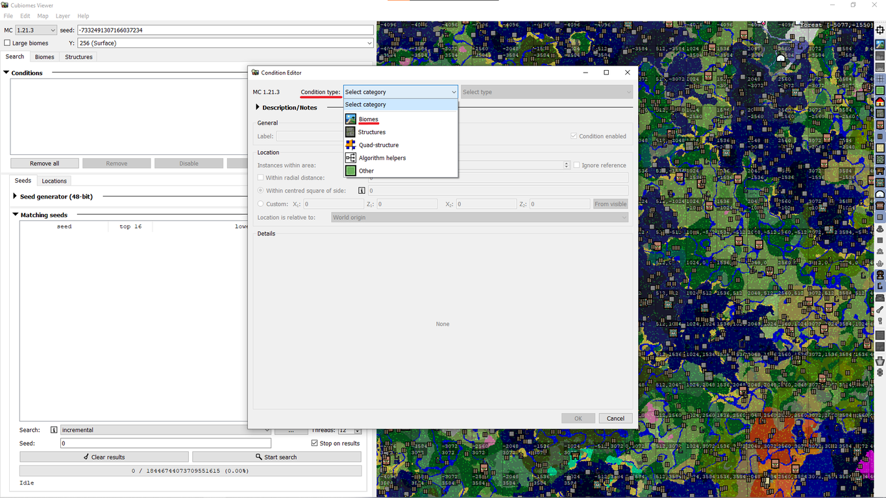

Гайд по Cubiomes Viewer

Cubiomes Viewer — це потужний інструмент для пошуку сідів у Minecraft Java Edition. Програма підтримує версії Minecraft до 1.21 і дозволяє: шукати біоми та структури за заданими умовами; візуалізувати карту світу з відображенням усіх біомів та структур; застосовувати складні фільтри для точного пошуку.
Розділ 1: Встановлення
Для початку перейди на офіційну сторінку:

Далі завантаж файл "cubiomes-viewer-static-w64.exe" з останнього релізу. *файл .exe для Windows. *Після завантаження запусти застосунок. Система ймовірно скаже, що програма не перевірена і може бути небезпечною, проте не перемайся - все добре, тож натисни "Детальніше" -> "Все одно виконати". Тепер дочекайся встановлення. Готово!
Розділ 2: Перший запуск

Після запуску програми відкриється головне вікно Cubiomes Viewer. Зверху розміщені меню і поля: тут можна обрати версію гри (наприклад, 1.21.3 як на скріншоті), ввести зерно світу та налаштувати різні параметри (висоту відображення, масштаб карти, великі біоми тощо). Більшу частину вікна займає велика кольорова карта, яка показує біоми; праворуч від карти є купа маленьких перемикачів для відображення структур - якщо увімкнути, відповідні значки з’являться на карті. Перший перемикач зверху відповідає за показ сітки з координатами, наступні три - за вибір виміру (Overworld, Nether, End).
Трохи нижче панель Search (Пошук). Тут можна переключатися між вкладками Seeds, Locations, Structures, Biome. У вкладці Seeds задаються умови пошуку нових сідів. У вкладці Locations – навпаки, аналіз вже відомого зерна (пошук локацій в конкретному світі). Є також вкладки Biome та Structures для перегляду розташування біомів/структур так само в конкретному світі.
Також є невеликий вибір мови програми. У меню зверху Edit → Edit Preferences можна обрати англійську, німецьку чи китайську. Поки без української(.
Розділ 3: Пошук біомів
Щоб знайти світи з потрібними біомами, використовуй вкладку Search. У віконці Conditions натисни кнопку Add.

Потім вибери умову Biome, як на скріншоті нижче.
Наприклад, якщо потрібен вишневий ліс (Cherry Grove) поруч зі спавном, натисни кнопку Add, обери Biome → Cherry Grove, задай координати(наприклад, X=0, Z=0) і натисни OK. Також можеш використовувати фільтр Biome Samples – він робить випадкові заміри біомів у заданому радіусі і гарантує, що заданий відсоток площі належить певним біомам (наприклад, щоб у регіоні 16×16 було щонайменше 50% вибраного біому).
Потім натисни Start. Cubiomes Viewer почне генерувати сіди та перевіряти умову. Зліва в списку з'явиться набір знайдених сідів, які відповідають критерію. Ти можеш двічі клацнути на будь-який із них, щоб скопіювати його, й потім перевірити в самій грі. У вкладці Biome можна побачити, які біоми розташовані навколо обраного світу.
Розділ 4:
Розділ 5:
Розділ 6: